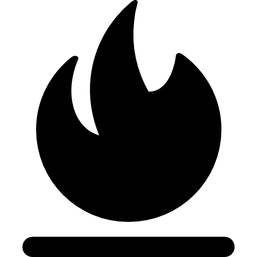

<hmtl>
<head>
    <!-- Se importan las librerías necesarias para la ejecución -->
    <meta http-equiv="Content-Type" content="text/html; charset=utf-8">	

    <link rel="stylesheet" href="https://cdnjs.cloudflare.com/ajax/libs/leaflet/1.6.0/leaflet.css" />
	<link rel="stylesheet" href="https://cdnjs.cloudflare.com/ajax/libs/Leaflet.EasyButton/2.4.0/easy-button.css" />
	
	<link rel="stylesheet" href="https://npmcdn.com/leaflet@1.0.0-rc.1/dist/leaflet.css" />
	<script src="https://npmcdn.com/leaflet@1.0.0-rc.1/dist/leaflet.js"></script>
	
	<link href="http://maxcdn.bootstrapcdn.com/font-awesome/4.1.0/css/font-awesome.min.css" rel="stylesheet">
		
	<script src="jquery-3.4.1.js"></script> 
	 
	<script src="https://cdnjs.cloudflare.com/ajax/libs/leaflet/1.6.0/leaflet.js"></script>
	<script src="https://cdnjs.cloudflare.com/ajax/libs/Leaflet.EasyButton/2.4.0/easy-button.js"></script>
	
	<script src="posición/src/L.Control.Locate.js" ></script>
	<link rel="stylesheet" href="posición/dist/L.Control.Locate.min.css" />

    <script src="betterscale/L.Control.BetterScale.js"></script>
	<link rel="stylesheet" href="betterscale/L.Control.BetterScale.css" />
	
	<script src="https://kit.fontawesome.com/02eb88b373.js" crossorigin="anonymous"></script>
	<link href="http://netdna.bootstrapcdn.com/font-awesome/4.0.0/css/font-awesome.css" rel="stylesheet"/>
	
	<script src="geocodificar/l.control.geosearch.js"></script>
    <script src="geocodificar/l.geosearch.provider.esri.js"></script>
	<link rel="stylesheet" href="geocodificar/l.geosearch.css" />
	
	<script src="https://npmcdn.com/jquery@3.0.0/dist/jquery.min.js"></script>
	<script src="graticule/Leaflet.Graticule.js"></script>
	<script src="leaflet-heat.js"></script>
	
	<link rel="stylesheet" href="https://leaflet.github.io/Leaflet.draw/src/leaflet.draw.css"/>
	<script src="https://cdnjs.cloudflare.com/ajax/libs/leaflet.draw/1.0.2/leaflet.draw.js"></script>
	<script src="spin/spin.min.js" charset="utf-8"></script>
	<script src="spin/leaflet.spin.min.js" charset="utf-8"></script>

    <script src="minimap/Control.MiniMap.js" type="text/javascript"></script>
    <script src="https://rawgit.com/MarcChasse/leaflet.ScaleFactor/master/leaflet.scalefactor.min.js"></script>
    <link rel="stylesheet" type="text/css" href="https://rawgit.com/MarcChasse/leaflet.ScaleFactor/master/leaflet.scalefactor.min.css">

    <link rel="stylesheet" href="minimap/Control.MiniMap.css" />
	<script src="minimap/Control.MiniMap.js" type="text/javascript"></script>

    <!-- Se define el título del geovisor-->
    <title>Geovisor</title>

    <!-- Se importa el archivo que contiene los estilos-->
    <link rel="stylesheet" href="style.css">
    
</head>

<body>
    <!-- Se define la ubicación del mapa y flecha norte-->
    <div id="map" class="map">
        </img>
        <a href="web.html">
            <button type="button" class = "volver"> VOLVER AL INICIO </button>
        </a>

        <!--<a href="web.html">
            <button type="button" class = "nuevo"> AÑADIR NUEVO ATRACTIVO </button>
        </a> NO PUDE :c-->

        
    </div>

</body>

<script>

    // Creacion de variable de mapa
    var map = L.map('map',
	{
        minZoom: 12,
		maxZoom: 18,
	}).setView([3.33110555556,-76.6142027778], 13);

    // Definición de mapa base
    var Mapa_Base = L.tileLayer('http://{s}.tile.openstreetmap.org/{z}/{x}/{y}.png', 
		{
		    maxZoom: 15,
			attribution: '&copy; <a href="http://www.openstreetmap.org/copyright">OpenStreetMap</a>'
		});

        var Mapa_Base_2 = L.tileLayer('https://{s}.tile.openstreetmap.fr/hot/{z}/{x}/{y}.png', 
	    {
	        maxZoom: 19,
	        attribution: '&copy; <a href="https://www.openstreetmap.org/copyright">OpenStreetMap</a>' 
        })
	
    // Se añade mapa base a la vista general
	Mapa_Base.addTo(map);
    
    // Se crea leyenda en el mapa
    var leyenda = L.control.layers({Mapa_Base, Mapa_Base_2}).addTo(map);

    // Se añade capa de corregimientos de la IDESC
    var corregimientos = L.tileLayer.wms('http://ws-idesc.cali.gov.co:8081/geoserver/wms?service=WMS&version=1.1.0',
		{
		layers: 'idesc:mc_corregimientos',
		format: 'image/png',
		transparent: true,	
		});
		map.addLayer(corregimientos);
    // Se añade capa de corregimientos a la leyenda
    leyenda.addOverlay(corregimientos, 'Corregimientos');
    
    // Se añade capa de ecoparqeues de la IDESC
    var ecoparques = L.tileLayer.wms('http://ws-idesc.cali.gov.co:8081/geoserver/wms?service=WMS&version=1.1.0',
		{
		layers: 'pot_2014:amb_eep_aeie_ecoparques',
		format: 'image/png',
		transparent: true,
		opacity: 0.4
		});
		map.addLayer(ecoparques);	
	// Se añade capa de ecoparques a la leyenda
	leyenda.addOverlay(ecoparques, 'Ecoparques');
    
    // Se añade capa de corredores ambientales de la IDESC
    var corredores = L.tileLayer.wms('http://ws-idesc.cali.gov.co:8081/geoserver/wms?service=WMS&version=1.1.0',
		{
		layers: 'pot_2014:amb_eep_corredores_ambientales',
		format: 'image/png',
		transparent: true,
		opacity: 0.3
		});
		map.addLayer(corredores);	
	// Se añade capa de corredores ambientales a la leyenda
	leyenda.addOverlay(corredores, 'Corredores Ambientales');
    
    // Se añade capa de red geodésica de la IDESC
    var red_geodesica = L.tileLayer.wms('http://ws-idesc.cali.gov.co/geoserver/idesc/wms?service=WMS&version=1.1.0',
		{
		layers: 'pot_2014:mc_red_control_geodesico',
		format: 'image/png',
		transparent: true,
		opacity: 1
		});
		map.addLayer(red_geodesica);	
	// Se añade capa de red geodésica a la leyenda
	leyenda.addOverlay(red_geodesica, 'Red Geodésica');

    // Se añade capa de pendientes de la IDESC
    var pendientes = L.tileLayer.wms('http://ws-idesc.cali.gov.co/geoserver/pot_2014/wms?service=WMS&version=1.1.0',
		{
		layers: 'pot_2014:bcs_pendientes_porcentaje',
		format: 'image/png',
		transparent: true,
		opacity: 0.13
		});
		map.addLayer(pendientes);	
	// Se añade capa de pendientes a la leyenda
	leyenda.addOverlay(pendientes, 'Pendientes [%]');

    // Se añade capa de plantas de tratamiento zonas rurales de la IDESC
    var plantas_tratamiento = L.tileLayer.wms('http://ws-idesc.cali.gov.co/geoserver/pot_2014/wms?service=WMS&version=1.1.0',
		{
		layers: 'pot_2014:spu_ard_ptar_rural',
		format: 'image/png',
		transparent: true,
		opacity: 1
		});
		map.addLayer(plantas_tratamiento);	
	// Se añade capa de plantas de tratamiento zonas rurales a la leyenda
	leyenda.addOverlay(plantas_tratamiento, 'Plantas Tratamiento Aguas Residuales Rurales');
    
    // Se añade capa de suelos de protección agricola rural de la IDESC
    var proteccion_agricola = L.tileLayer.wms('http://ws-idesc.cali.gov.co/geoserver/pot_2014/wms?service=WMS&version=1.1.0',
		{
		layers: 'pot_2014:nru_suelo_proteccion_agricola',
		format: 'image/png',
		transparent: true,
		opacity: 1
		});
		map.addLayer(proteccion_agricola);	
	// Se añade capa de suelos de proyección agricola rural a la leyenda
	leyenda.addOverlay(proteccion_agricola, 'Suelo de Protección Agrícola Rural');
    
    // Se añade capa de planes zonales rurales de la IDESC
    var planes_zonales = L.tileLayer.wms('http://ws-idesc.cali.gov.co/geoserver/pot_2014/wms?service=WMS&version=1.1.0',
		{
		layers: 'pot_2014:nru_planes_zonales_rurales',
		format: 'image/png',
		transparent: true,
		opacity: 1
		});
		map.addLayer(planes_zonales);	
	// Se añade capa de planes zonales rurales a la leyenda
	leyenda.addOverlay(planes_zonales, 'Planes Zonales Rurales');
    

    // Creación de puntos en formato GeoGJSON

    var puntos_geojson = [{
    // Punto 1: Parque de la Salud
    "type": "Feature",
    "properties":{"tipo":"Parque de la Salud"},
    "geometry": {
        "type": "Point",
        "coordinates": [-76.56866397399364, 3.3482796527496363],
		}
		},

    // Punto 2: Río Pance , 	
	{
    "type": "Feature",
    "properties":{"tipo":"Río Pance"},
    "geometry": {
        "type": "Point",
        "coordinates": [-76.6386531269594, 3.32865187804991],
		}
		},
	
    // Punto 3: Ecoparque Corazón de Pance
	{
    "type": "Feature",
    "properties":{"tipo":"Ecoparque Corazón de Pance"},
    "geometry": {
        "type": "Point",
        "coordinates": [-76.551646675714, 3.3464443530223646],
		}
		},
	
    // Punto 4: Parcelación Chorro de Plata
	{
    "type": "Feature",
    "properties":{"tipo":"Parcelación Chorro de Plata"},
    "geometry": {
        "type": "Point",
        "coordinates": [-76.59424051338229, 3.3452771952813216],
		}
		},
	
    // Punto 5: Club del Departamento
	{
    "type": "Feature",
    "properties":{"tipo":"Club del Departamento"},
    "geometry": {
        "type": "Point",
        "coordinates": [-76.58833334565335, 3.3444837405476675],
		}
		},
    
    // Punto 6: Parque Acuático Los Arrayanes 3.3432279408640477, -76.5923363744887
	{
    "type": "Feature",
    "properties":{"tipo":"Parque Acuático Los Arrayanes"},
    "geometry": {
        "type": "Point",
        "coordinates": [-76.5923363744887, 3.3432279408640477],
		}
		},
    
    // Punto 7: El Cafetal
	{
    "type": "Feature",
    "properties":{"tipo":"El Cafetal"},
    "geometry": {
        "type": "Point",
        "coordinates": [-76.60712449408487, 3.3341537724638024],
		}
		},
    
    // Punto 8: La Chorrera del Indio
	{
    "type": "Feature",
    "properties":{"tipo":"La Chorrera del Indio"},
    "geometry": {
        "type": "Point",
        "coordinates": [-76.61442654565337, 3.332580922151279],
		}
		},
    
    // Punto 9: Hacienda La Riverita
	{
    "type": "Feature",
    "properties":{"tipo":"Hacienda La Riverita"},
    "geometry": {
        "type": "Point",
        "coordinates": [-76.554895084912, 3.360988830756209],
		}
		},
    
    // Punto 10: El Pueblito Pance
	{
    "type": "Feature",
    "properties":{"tipo":"El Pueblito Pance"},
    "geometry": {
        "type": "Point",
        "coordinates": [-76.63565046992746, 3.33609264589655],
		}
		},
    
    // Punto 11: EcoParque Lago de Las Garzas
	{
    "type": "Feature",
    "properties":{"tipo":"EcoParque Lago de Las Garzas"},
    "geometry": {
        "type": "Point",
        "coordinates": [-76.5371466656683, 3.3338860446654897],
		}
		},
    
    // Punto 12: El Arca de Noé , 
	{
    "type": "Feature",
    "properties":{"tipo":"El Arca de Noé"},
    "geometry": {
        "type": "Point",
        "coordinates": [-76.60398699838949, 3.336573657339912],
		}
		},
    
    // Punto 13: Centro Recreativo y Deportivo Comfandi Pance  
	{
    "type": "Feature",
    "properties":{"tipo":"Centro Recreativo y Deportivo Comfandi Pance"},
    "geometry": {
        "type": "Point",
        "coordinates": [ -76.53689262021074, 3.3071674643094626],
		}
		},
    
    // Punto 14: Club Shalom
	{
    "type": "Feature",
    "properties":{"tipo":"Club Shalom"},
    "geometry": {
        "type": "Point",
        "coordinates": [-76.54773686974421, 3.3356657439460067],
		}
		},
    
    // Punto 15: Fundación Farallones - Reserva Natural Bachue 
	{
    "type": "Feature",
    "properties":{"tipo":"Fundación Farallones - Reserva Natural Bachue"},
    "geometry": {
        "type": "Point",
        "coordinates": [-76.65355295239803, 3.3336264537678364],
		}
		},
    
    // Punto 16: Humedal La Riverita
    {
    "type": "Feature",
    "properties":{"tipo":"Humedal La Riverita"},
    "geometry": {
        "type": "Point",
        "coordinates": [-76.5572537730504, 3.359791430213335],
		}
		},
    
    // Punto 17: Club Recreativo del SENA
    {
    "type": "Feature",
    "properties":{"tipo":"Club Recreativo del SENA"},
    "geometry": {
        "type": "Point",
        "coordinates": [-76.55992423770849, 3.3646548379495216],
		}
		},
    
    // Punto 18: Club Campestre de Cali
    {
    "type": "Feature",
    "properties":{"tipo":"Club Campestre de Cali"},
    "geometry": {
        "type": "Point",
        "coordinates": [-76.54242933529613, 3.369556607912794],
		}
		},
    
    // Punto 19: Sede del Deportivo Cali
    {
    "type": "Feature",
    "properties":{"tipo":"Sede del Deportivo Cali"},
    "geometry": {
        "type": "Point",
        "coordinates": [-76.55144513689815, 3.3389269022930317],
		}
		},
    
    // Punto 20: EcoHotel El Castillo Village
    {
    "type": "Feature",
    "properties":{"tipo":"EcoHotel El Castillo Village"},
    "geometry": {
        "type": "Point",
        "coordinates": [-76.5683460203546, 3.3464544676164407],
		}
		},
    
    // Punto 21: Lagos De Pesca Deportiva La Cocha "Pance" 
    {
    "type": "Feature",
    "properties":{"tipo":"Lagos De Pesca Deportiva La Cocha"},
    "geometry": {
        "type": "Point",
        "coordinates": [-76.57467068319686, 3.347434606057889],
		}
		},
    
    // Punto 22: Hacienda Aurora
    {
    "type": "Feature",
    "properties":{"tipo":"Hacienda Aurora"},
    "geometry": {
        "type": "Point",
        "coordinates": [-76.62354795242257, 3.322188467059402],
		}
		},
    
    // Punto 23: Centro de Educación Ambiental El Topacio - CVC
    {
    "type": "Feature",
    "properties":{"tipo":"Centro de Educación Ambiental El Topacio - CVC"},
    "geometry": {
        "type": "Point",
        "coordinates": [-76.63674795681355, 3.3191741443040055],
		}
		},
    
    // Punto 24: Reserva Natural Anahuac Pance
    {
    "type": "Feature",
    "properties":{"tipo":"Reserva Natural Anahuac Pance"},
    "geometry": {
        "type": "Point",
        "coordinates": [-76.64002159735541, 3.33002252191412],
		}
		},
        ];
    
    // Se define estilo para mostrar la etiqueta de cada punto
    var estilo = 
		{
			radius: 8,
			fillColor: "yellowgreen",
			color: "black",
			weight: 1,
			opacity: 1,
			fillOpacity: 1,
		};
    
    var marcador = L.geoJSON(puntos_geojson,{onEachFeature:function(feature, layer){
		layer.bindTooltip("<h4>"+feature.properties.tipo+"</h4>",{permanent: false, className: 'labelstyle', 
        direction:'top', opacity: 1}).openTooltip()
	}, pointToLayer:function(feature, latlng) {return L.circleMarker(latlng, estilo)}}).addTo(map);

    console.log(marcador);

    // Se añade escala numérica
    L.control.scale({position:'bottomleft'}).addTo(map);

    // Se añade escala gráfica
    L.control.betterscale({position:'bottomright'}).addTo(map);

    // Se añade cuadrícula
    L.latlngGraticule({
			showLabel: true,
			opacity:0.5,
            weight: 0.5,
			color: 'black',
			zoomInterval: [
				{start: 13, end: 18, interval: 0.05}
			]
		}).addTo(map);
    
    // Añadir botón de restauración
    L.easyButton('', function() 
		{
		alert('Se mostrará la VISTA PRINCIPAL del Geovisor.');
		location.reload();
	}).addTo(map);

    // Añadir botón de mapa de calor
    L.easyButton('', function() {	
		var heatmap = L.heatLayer([],{radius: 40}).addTo(map);
		marcador.eachLayer( (e) => {
			heatmap.addLatLng([e._latlng.lat, e._latlng.lng,10],{radius: 40});
		})
	}).addTo(map);

    // Añadir botón de geolocalización (ubicación GPS)
    L.control.locate({setView:'true',flyto:'true',drawCircle:'true',showCompass:'true',drawMarker:'false',keepCurrentZoomLevel:'true',locateOptions: {
               enableHighAccuracy: true}}).addTo(map);

    L.control.scalefactor().addTo(map);
    
    // Añadir botón de geocodificación
    new L.Control.GeoSearch({provider: new L.GeoSearch.Provider.Esri()}).addTo(map);

	/*var popup = L.popup();	
	function onMapClick(e) {
		popup
			.setLatLng(e.latlng)
			.setContent("<center>"+"Has hecho click en la coordenada:"+"</center>"+"<br>" +  e.latlng.lat.toString() + "," +  e.latlng.lng.toString())
			.openOn(map);
	}
	map.on('click', onMapClick);*/


    var drawnItems = new L.FeatureGroup();

			var drawControl = new L.Control.Draw({
				position: 'topleft',
				edit: {
					featureGroup: drawnItems,
					remove: true,
					edit: false,
				},
				draw: {
					circlemarker: true,
					circle:true,
					rectangle:false,
					marker:false,
				}
			});
			map.addControl(drawControl);
			
	map.on(L.Draw.Event.CREATED, function (e) {
			    var type = e.layerType,
			        layer = e.layer;

			    if (type === 'marker') {
			        layer.bindPopup('A popup!');
			    }

			    drawnItems.addLayer(layer);
				map.addLayer(drawnItems);
			});

	
	map.spin(false);

    var osmUrl='http://{s}.tile.openstreetmap.org/{z}/{x}/{y}.png';
	var osmAttrib='Map data &copy; OpenStreetMap contributors';
	
	var osm2 = new L.TileLayer(osmUrl, {minZoom: 0, maxZoom: 8, attribution: osmAttrib });
		var miniMap2 = new L.Control.MiniMap(osm2, { toggleDisplay: true }).addTo(map);

</script>

</hmtl>

